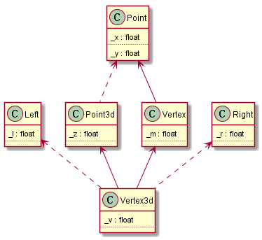

Inside the C++ Object Model
Table of Contents
1 Semantics of Constructors
keyword explicit makes it possible to suppress application of a single argument constructor as a conversion operator.
1.1 Default Constructor Construction
"default constructors … are generated (by the compiler) where needed….". there are 2 kinds of needs, one is needs of the program, another is need of the compiler. Here, it means latter, moreover, the synthesized constructor performs only those activities required by the compiler.
The synthesis (including default constructor, copy constructor, destructor and assignment copy operator) takes place only if the contructor actually needs to be invoked.since these synthesized functions are inline or non-inline static, it prevent compiler to synthesize multiple these default functions.
Within the synthesized default constructor, only the base class subobjects and member class objects are initialize. All other nonstatic data members are not.
For a class without any constructors, four conditions under which the default constructor generated by compiler are:
- it has one or more Member Class Objects with Default Constructor
No matter synthesized constructor or user defined contructors of the class, these Default Constructors are invoked in the order of Member Class Objects declaration, and before explicit user code.
- it has Base Class with Default Constructor
If Member Class Objects with Default Constructor are also present, they are also invoked after the invocation of all base class constructors.
- it either declare or inherit a virtual function
In order to initialize the vptr for object of the class with the address of proper virtual table, code must be be inserted by compiler to each constructor the class defines. If the class has no user-declared constructor, compiler synthesize a default constructor to initialize the vptr for object of the class.
- it is derived from an inheritance chain in which one or more base classes are virtual
To make the virtual base class location within each derived class object available at runtime,compiler insert code in each constructors. Without user-declared constructor, compiler need to synthesize a default constructor.
1.2 Copy Constructor Constrution
If a class does not provide an explicit copy constructor, the class object initiazed with another object of its class is initialized by Default Memberwise Initialization.
Default Memberwise Initialization copies the value of each built-in or derived data member(such as a pointer or an array) from one class object to another.
A member class object, however, is not copied; rather, Memberwise Initialization is recursively applied. How is this operation in practice carried out? Compiler need to synthesize a copy constructor in order to invoke the copy constructor of the member class object. The prereuisite is that the class does not exhibit Bitwise Copy Semantics.
By the way, in case of the synthesized copy constructor, the nonclass members are also copied.
Four instances that a class does not exhibit Bitwise Copy Semantics:
- the class contains a member object of a class for which a copy constructor(either explicit one or synthesized one) exists
- the class is derived from a base class for which a copy constructor(either explicit one or synthesized one) exists
- the class declares one or more virtual functions
- the class is derived from an inheritance chain in which one or more base classes are virtual
For 1 and 2, compiler needs to insert invocations of the member or base class copy constructors inside the synthesized copy constructor.
For 3, the synthesized copy constructor explicitly sets the object's vptr to the class virtual table rather than coping it from the right-hand class object.
For 4, the synthesized copy constructor is to initialize the virtual base class pointer, to perform necessary memberwise initializations of its members, and to do some other memory tasks.
The rule applies on Copy assignment operator as well.
1.3 Program Transformation Semantics
1.3.1 Argument Initialization
Example shown below.
void foo(X x0); X xx; foo(xx);
One implementation described with Pseudo C++ Code.
//Pseudo C++ Code void foo(X& x0); X _tmp0; _tmp0.X::X(xx) //Copy Constructor foo(_tmp0); //Destructor would be invoked on _tmp0.
Another implementation is to copy constructor the actual argument directly onto program stack. Prior to the return of the function, the local object's desconstructor, if defined, is applied to it.
1.3.2 Return Value Initialization
Example:
X bar() { X xx; // skip process... return xx; } X x = bar();
Pseudo C++ Code for above
void bar(X& _result) { X xx; //skip process.. _result.X::X(xx); //Copy Constructor return; } X x; // Not call Default constructor bar(x);
NRV: Optimize the function by substituting the _result argument for the named return value.
void bar(X& _result) { _result.X::X(); //process _result directly return; } X x; // Not call Default constructor bar(x);
Some programmers criticize the NRV optimization, because other constructor instead of Copy Constructor is called, if they are very different, problem could happen.
1.4 Member Initialization List
Two options of initializing class members: either the member initialization list or within constructors. which one you choose is not signigicant, except in 4 cases below you must use the Member Initialization List .
- when initializing a reference member
- when initializing a const member
- when invoking a base constructor with a set of arguments
- when invoking a member class constructor with a set of arguments
Compiler iterates over and possiblt reorders the initialization list to reflect the declaration order of the members. It inserts the code within the body of the constructor prior to any explicit user code.
2 Semantics of Data
class X{}; class Y: public virtual X {}; class Z: public virtual X {}; class A: public Y, public Z {}; int main(){ X x; Y y; Z z; A a; cout<<"x:"<<sizeof(x)<<", y:"<<sizeof(y)<<", z:"<<sizeof(z)<<", a:"<<sizeof(a)<<endl; return 0; }
The output from some older compiler perhaps is x:1, y:5, z:5, a:12, while output from GCC is x:1, y:4, z:4, a:8
For an empty class(like X), compiler inserts a char member so that two objects of the class are allocated unique addresses in memory.
For a class with a virtual base class(like Y), it has a pointer (either to the virtual base class subobject or to an associated table within which either the address or offset to the virtual base class subobject),Older compiler also inserts the char member of the virtual base class to Y while GCC does not, because Y has the pointer, no need a char member to assure that two objects of Y are allocated unique addresses in memory, so it has 4 bytes for GCC, while, considering alignment, 8 bytes for older compiler.
For class A, only consider older compiler, why is it 12 bytes instead of 16 bytes? because a virtual base class subobject occurs only once in the derived class regardless of the number of times it occurs within the class inheritance hierarchy.
2.1 Data Member Layout
The static data members are stored in the program's data segment independant of individual class objects.
Within an access section(private, protected or public) of a class object, the nonstatic data members are set down in the order of their declaration.
Within multiple access section of a class object, it is up to compiler to order the nonstaitc data members. In practice, multiple access sections are concatenated together into an contiguous block in the order of declaration.
A derived class object is represented as the concatenation of its members with those of its base class(es). The actual ordering of the derived and base class parts vary from compiler, but, in practice, the base class members always appear first, exept in case of a virtual base class.
Traditionally, vptr is placed after all the explicitly declared members of the class so that it is compatible to struct.
More recently, it has been placed at the beginning of the class object so that it is convinient, in case of multiple inheritance,
to invoke virtual function by pointer or reference.
what about vbptr ?
2.2 Poiner to Data Members
class Point3d { public: virtual ~Point3d(); static Point3d origin; float x, y, z; }; Point3d::~Point3d(){} int main(){ Point3d p3d; cout<<"&Point3d::x = "<<&Point3d::x<<", &Point3d::y = "<<&Point3d::y<<endl; printf("&Point3d::x = %p, &Point3d::y = %p\n", &Point3d::x, &Point3d::y); cout<<&p3d<<", "<<&p3d.x<<", "<<&p3d.y<<endl; printf("%p, %p, %p", &p3d, &p3d.x, &p3d.y); return 0; }
Output for GCC is shown in table, that is very different from the content in the book.
| cout | printf | |
|---|---|---|
| &Point3d::x | 1 | 4 |
| &Point3d::y | 1 | 8 |
| &p3d.x | 4 | 4 |
| &p3d.y | 8 | 8 |
class Base1 { public: int val1; }; class Base2 { public: int val2; }; class Derived: public Base1, public Base2 {}; void func1(int Derived::* dmp, Derived * pd){ cout<<pd->*dmp<<endl; } void func2(Derived* pd){ int Base2::*bmp = &Base2::val2; func1(bmp, pd); } int main(){ Derived d; d.val1 = 1; d.val2 = 2; func2(&d); }
Output for GCC is 2.
int Derived::* dmp means bmp is a pointer to any data member of type int in class Derived.
2.3 Access of a Data Member
2.3.1 Static Data Members
Static Data Members are treated as if each were declared as a global variable, but with visibility limited to the scope of the class.
By the way, access permission works on Static Data Members.
2.3.2 Nonstatic Data Members
For a Nonstatic Data Member of struct, class, single inheritance hierarchy, or multiple inheritance hierarchy, access is equivalent in performance no matter it is accessed by object directly or pointer(reference) to the object.
For a Data Member of virtual base class, it is equivalent as above to access it by derived class object directly, but it is somewhat slower to access it by pointer()reference) to derived class object.
2.4 Inheritance and the Data Member
2.4.1 Single inheritance
Normally, Single inheritance provides a form of "natural" polymophism regarding the conversion between base and derived types within the inheritance hierarcy, because the base and derived class objects both begin at the same address, no need for compiler intervention.
Placing the vptr at the begining of the class object breaks the natural polymorphism of single inheritance in the special case of a base class without virtual functions and a derived class with them, so it needs compiler intervention.
Both multiple and virtual inheritances, the need for compiler intervention is considerably more pronounced.
2.4.2 Multiple inheritance
class Point2d { public: Point2d(); virtual float x(); virtual float y(); protected: float _x, _y; }; Point2d::Point2d(){_x=1;_y=2; cout<<"&_x:"<<&_x<<", "<<"&_y:"<<&_y<<endl;} float Point2d::x() {cout<<"Point2d::x()"<<endl;} float Point2d::y() {cout<<"Point2d::y()"<<endl;} class Point3d: public Point2d { public: Point3d(); virtual float z(); protected: float _z; }; Point3d::Point3d(){_z=3; cout<<"&_z:"<<&_z<<endl;} float Point3d::z() {cout<<"Point2d::z()"<<endl;} class Vertex { public: Vertex(); virtual float e(); protected: float _e; }; Vertex::Vertex(){_e=4; cout<<"&_e:"<<&_e<<endl;} float Vertex::e(){cout<<"Vertex::e()"<<endl;} class Vertex3d: public Point3d, public Vertex { public: Vertex3d(); virtual float m(); protected: float _m; }; Vertex3d::Vertex3d() {_m=5; cout<<"&_m:"<<&_m<<endl;} float Vertex3d::m(){cout<<"Vertex3d::m()"<<endl;} typedef void (*Fun)(); int main(){ Vertex3d v3d; Func* vptr1 = *(Func**)&v3d; Func* vptr2 = *((Func**)&v3d+4); cout<<"sizeof(v3d):"<<sizeof(v3d)<<"bytes"<<endl; cout<<"&v3d:"<<&v3d<<endl; vptr1[0](); vptr1[1](); vptr1[2](); vptr1[3](); vptr2[0](); return; }
Output for GCC:
&_x:0x28ff24, &_y:0x28ff28
&_z:0x28ff2c
&_e:0x28ff34
&_m:0x28ff38
sizeof(v3d):28bytes
&v3d:0x28ff20
Point2d::x()
Point2d::y()
Point2d::z()
Vertex3d::m()
Vertex::e()
The Standard does not require a specific ordering of the Point3d and Vertex base classes of Vertex3d, but, in practice, they are placed in the order of declaration.
For a derived class with two base classes, and the second base class declares a virtual function while the first one does not, an optimization under some compilers switch their order to save the generation of an additional vptr within the derived class object.
2.4.3 Virtual inheritance
A class containing one or more virtual base class subobjects is divided into two regions: an invariant region and a shared region. Data within the invariant region remains a fixed offset from the start of the object regardless of subsequent dirivations. The shared region represents the virtual base class subobjects. The location of data within the shared region fluctuates with each derivation.
class Point2d { public: Point2d(); protected: float _x, _y; }; Point2d::Point2d(){_x=1;_y=2; cout<<"&Point2d::_x:"<<&_x<<", "<<"&Point2d::_y:"<<&_y<<endl;} class Point3d: public virtual Point2d { public: Point3d(); protected: float _z; }; Point3d::Point3d(){_z=3; cout<<"&Point3d::_z:"<<&_z<<endl;} class Vertex: public virtual Point2d { public: Vertex(); protected: float _e; }; Vertex::Vertex(){_e=4; cout<<"&Vertex::_e:"<<&_e<<endl;} class Vertex3d: public Point3d, public Vertex { public: Vertex3d(); protected: float _m; }; Vertex3d::Vertex3d() {_m=5; cout<<"&_m:"<<&_m<<endl;} int main() { Vertex3d* v3d = new Vertex3d(); int * t1 = *(int **)v3d; int * t2 = *((int**)v3d+2); cout<<"sizeof(v3d):"<<sizeof(*v3d)<<"bytes"<<endl; cout<<"&v3d:"<<v3d<<endl; cout<<t1[-3]<<endl; //vbase_offset cout<<t1[-2]<<endl; //top_offset cout<<t1[-1]<<endl; //ptr to typeinfo for Vertex3d cout<<t1[0]<<endl; //ptr to virtual function cout<<t2[-3]<<endl; //vbase_offset cout<<t2[-2]<<endl; //top_offset cout<<t2[-1]<<endl; //ptr to typeinfo for Vertex3d cout<<t2[0]<<endl; // ptr to virtual function return 0; }
- GCC
- Only pointer to virtual function table contained in object
- No pointer to virtual base class table contained in object
- Virtual base class table is just before the virtual function table.
g++ -fdump-class-hierarchy -o [file] [file].cppto generate [file].cpp.class that contains object memory layout
- VC
- Pointer to virtual function table contained in object.
- Pointer to virtual base class table contained in object as well.
cl [file].cpp /d1reportSingleClassLayoutto generate object memory layout.
One inheritance chain could have multiple virtual base class table, but only one virtual function table.
Multiple inheritance could have multiple virtual function table, but only one virtual base class table.
3 Semantics of Funtion
C++ supports three flavors of member functions: static, nonstatic, and virtual.
3.1 Varieties of Member Invocation
Assume a nonstatic member function
Point3d Point3d::normalize() const { register float mag = magnitude(); return Point3d(_x/mag, _y/mag, _z/mag); }
Compiler internally transformes it into the equivalent nonmember instance. Steps shown below
- Rewrite the signature to insert an additional argument to the member function that provides access to the invoking class object(this pointer).
- Rewrite each direct access of a nonstatic data member of the class to access the member through the this pointer.
- Rewrite the member function into an external function, mangling its name so that it's lexically unique within the program
Finally, if Point3d has copy constructr and NRV is applied, the member function above becomes
void normalize__7Point3dFv( register const Point3d *const this, Point3d &__result ){ register float mag = this->magnitude(); // default constructor __result.Point3d::Point3d( this->_x/mag, __result._y. this->_z/mag ); return; }
3.1.1 Nonstatic Member Functions
the call obj.normalize() is transformed into normalize__7Point3dFv(&obj).
the call ptr->normalize() is transformed into normalize__7Point3dFv(ptr).
3.1.2 Virtual Member Function
If normalize() is a virtual function, the call ptr->normalize() is transformed into (*ptr->vptr[1])(ptr).
vptris pointer to virtual function table.1is the index into the virtual table slot associated withnoemalize(), tha is known during compiling.
The invocation of a virtual function through a class object should always be resolved by compiler as an ordinary nonstatic member function.
so the call obj.normalize() is transformed into normalize__7Point3dFv(&obj).
3.1.3 Static Member Function
the call obj.normalize() is transformed into normalize__7Point3dSFv(&obj).
the call ptr->normalize() is transformed into normalize__7Point3d1SFv(ptr).
SFvmeans, a static member function with an empty(void) argument list.- static member can not be declared
const,volatile, orvirtual.
Note, if it is static member function, it is type of float (*)(), if it is nonstatic member function, it is type of float (Point3d::*)().
3.2 Virtual Member Functions
In C++, the set of virtual functions capable of being invoked through an object of its class is known at compile time, moreover, this set is invariant.
To support polymorphism, a pointer to virtual function table is inserted within each class object, each virtual function is assigned a fixed index within the table.
When a class derives from a base class, it can
- inherit the instance of the virtual function declared within the base class
- override the instance with one of its own
- introduce a new virtual function not present in the base class, then the virtual function table is grown by a slot.
finally, the address of that instance is coppied into the associated slot in the derived class's virtual function table.
3.2.1 Virtual Functions under Multiple Inheritance
3.2.2 Pointer to Member Functions
Pointer to Static Member Function(void (*pf)(int)) is type of Pointer to Function, while Pointer to non-Static Mmeber Function(void (className::*pcf)(int)) is not,
and they have different size, that is because the latter contains other information related to this.
// WIN7 G++ class Base1 { public: Base1(); virtual ~Base1(); virtual void speak(); virtual void say(); void talk(); virtual void tell(); protected: float b1; }; Base1::Base1(){b1=1; std::cout<<"&b1:"<<&b1<<std::endl;} Base1::~Base1(){std::cout<<"Base1::Base1()"<<std::endl;} void Base1::speak(){std::cout<<"Base1::speak()"<<std::endl;} void Base1::talk(){std::cout<<"Base1::talk()"<<std::endl;} void Base1::say(){std::cout<<"Base1::say()"<<std::endl;} void Base1::tell(){std::cout<<"Base1::tell()"<<std::endl;} class Derived: public Base1 { public: Derived(); virtual ~Derived(); void talk(); virtual void tell(); protected: float d; }; Derived::Derived() {d=5; std::cout<<"&d:"<<&d<<std::endl;} Derived::~Derived(){std::cout<<"Derived::~Derived()"<<std::endl;} void Derived::talk(){std::cout<<"Derived::talk()"<<std::endl;} void Derived::tell(){std::cout<<"Derived::tell()"<<std::endl;} typedef void (Base1::*Func)(); int main() { Derived* pd = new Derived(); Func* vptr1 = *(Func **)pd; //the length of non-static member function or nonstatic virtual member function is 8 bytes, while that of pointe is 4 bytes. std::cout<<sizeof(pd)<<", "<< sizeof(&Base1::speak)<<", "<<sizeof(&Base1::talk)<<std::endl; //the address of non-static member function or nonstatic virtual member function is 1. std::cout<<&Base1::speak<<", "<<std::hex<<&Base1::talk<<std::endl; Func f1 = &Base1::speak; (pd->*f1)(); //Base1::speak() Func f2 = &Base1::tell; (pd->*f2)(); //Derived::tell() Func f3 = &Base1::talk; (pd->*f3)(); //Base1::talk() pd->talk(); //Derived::talk() (pd->*vptr1[1])(); //Base1::speak() (pd->*vptr1[2])(); //Derived::tell() //where is say()? because each nonstatic member function is 8 bytes while it takes 4 bytes in Virtual Table. return 0; }
4 Semantics of Construction, Destruction and Copy
class Abstract_base { public: virtual ~Abstract_base() = 0; virtual void interface() = 0; virtual const char* mumble() const {return _mumble;} protected: Abstract_base(char* pc = NULL); char * _mumble; }; Abstract_base::Abstract_base(char* pc) { _mumble = pc; } Abstract_base::~Abstract_base() { cout<<"Abstract_base::~Abstract_base"<<endl; } void Abstract_base::interface() {cout<<"Abstract_base::interface"<<endl;} class Concrete_derived: public Abstract_base { public: virtual void interface(); }; void Concrete_derived::interface() {Abstract_base::interface(); cout<<"Concrete_derived::interface"<<endl;} int main() { Concrete_derived cd; cd.interface(); return 0; }
An abstract class could have constructor, but it would be better to make the constructor protected.
A pure virtual function must be implemented by derived classes before the class can be instantiated, no matter the function implemented in base class or not, but there is an exception, that is pure virtual destructor, the pure virtual destructor must be defined in base class, reason is, each derived class destructor is internally argumented to statically invoke each of its virtual base and immediate base class destructor, the absence of a definition of any of the base class destructors ingeneral results in a link-time error. A better design is to not declare a virtual destructor as pure.
4.1 Object Construction
1: Point global; 2: 3: Point foobar() 4: { 5: Point local; 6: Point* heap = new Point; 7: *heap = local; 8: 9: delete heap; 10: return local; 11: }
4.1.1 Object Construction without Inheritance
typedef struct { float x, y; } Point;
No default constructor, destructor, copy constructor and copy assignment operator generated automaticallu.
For variable global, the program behaves exactlly as it would in C, but, with a exception, in C++, it is defination
of global, while it is declaration of global in C.
The variable local is neither constructed nor destructed as well.
The initialization of heap on Line 6 is transformed into Point* heap = __new(sizeof(Point));, and not constructed, too.
The deletion of heap is transformed into __delete(heap);, and no destructor called.
The return of local does not trigger copy constructor, and, in practice, bitwise operation runs.
class Point { public: Point(float x=0.0, float y=0.0):_x(x), _y(y) {} private: float _x, _y; };
The size of Point class object remains unchanged: the three contiguous corrdiante float members.
We do not define either a copy constructor or copy operator because the default bitwise semantics are sufficient. Nor do we provide a destructor, the default program management of memory is sufficient.
Point::Point(0.0, 0.0, 0.0) is applied to variable global and variable local.
The initialiazation of heap on Line 6 is transformed into
//Pseudo C++ Code Point* heap = __new(sizeof(Point)); if(heap) heap->Point::Point();
Bitwise copy applied on the return of local.
class Point { public: Point(float x=0.0, float y=0.0):_x(x), _y(y) { cout<<"asdf"<<endl;} virtual float z(); private: float _x, _y; };
In addition to vptr added within the class object, the introduction of virtual function causes
- code added into constructors to initialize
vptr, that is after invocation of any base class constructors, but before execution of any user code. - both copy constructor and a copy operator synthesized, that can protect
vptrfrom corruption by bitwise operation.
The effect of initialization of global, initialization of heap, and deletion of heap is the same as
that we mentioned above. *heap = local; may trigger the actual synthesize of the copy assignment operator.
4.1.2 Object Construction with Inheritance
Constructors can contain a great deal of hidden program code because the compiler arguments every constructors as below.
- The data member initialized in the member initialization list have to be entered within the body of the constructor in the order of their declaration.
- If a member class object is not present in the member initialization list but has an associated default constructor, the default constructor muse be invoked.
- Prior to that, if there is a virtual table pointer contained within the class object, it must be initialized with the address of the appropriate virtual table.
- Prior to that, all immediate base class constructors must be invoked in the order of base class declaration.
- If the base class is listed within the member initialization list, the explicit arguments, if any, must be passed.
- If the base class is not listed within the member initialization list, the default constructor must be invoked, if present.
- If the base class is a second or subsequent base class, the
thispointer must be adjusted.
- Prior to that, all virtual base class constructors must be invoked in a left-to-right, depth-first search of the inheritance hierarchy defined by the derived class.
- These constructors, however, may be invoked if, and only if, the class object represents the "most-derived class".
- If the virtual base class is listed within the member initialization list of the "most-derived class", the explicit arguments, if any, must be passed. Otherwise, if there is a default constructor, it must be invoked.
- In addition, the offset of each virtual base class subobject within the class must somehow be made accessible at runtime.
class Point { public: Point(float x=0.0, float y=0.0); virtual void size(); private: float _x, _y; }; Point::Point(float x, float y):_x(x), _y(y) { cout<<"Point::Point() "<<"_x: "<<_x<<", _y: "<<_y<<", &_x: "<<&_x<<", &_y: "<<&_y<<endl; size();} void Point::size(){ cout<<"Point size: "<<sizeof(*this)<<endl;} class Point3d: public virtual Point { public: Point3d(float x=1.0, float y=1.0, float z=1.0); virtual void size(); private: float _z; }; Point3d::Point3d(float x, float y, float z): Point(x,y), _z(z){ cout<<"Point3d::Point3d() "<<" _z: "<<_z<<", &_z: "<<&_z<<endl; size();} void Point3d::size(){ cout<<"Point3d size: "<<sizeof(*this)<<endl;} class Vertex: public Point { public: Vertex(float x=2.0, float y=2.0, float m = 2.0); // virtual void size(); private: float _m; }; Vertex::Vertex(float x, float y, float m): Point(x,y), _m(m){ cout<<"Vertex::Vertex() "<<"_m: "<<_m<<", &_m: "<<&_m<<endl; size(); } //void Vertex::size(){cout<<"Vertex size: "<<sizeof(*this)<<endl;} class Left { public: Left(float l=3.0); virtual void size(); private: float _l; }; Left::Left(float l): _l(l){ cout<<"Left::Left() "<<"_l: "<<_l<<", &_l: "<<&_l<<endl; size();} void Left::size(){ cout<<"Left size: "<<sizeof(*this)<<endl;;} class Right { public: Right(float r=4.0); virtual void size(); private: float _r; }; Right::Right(float r) { cout<<"Right::Right() "<<"r: "<<r<<", _r: "<<_r<<", &_r: "<<&_r<<endl; size();} void Right::size(){ cout<<"Right size: "<<sizeof(*this)<<endl;;} class Vertex3d: public virtual Left, public Point3d, public Vertex, public virtual Right { public: Vertex3d(float v=5.0); virtual void size(); //if it is not defined here, compile error: reference to `size' is ambiguous private: float _v; }; Vertex3d::Vertex3d(float v): Point(7.0,8.0), Right(v) {cout<<"Vertex3d::Vertex3d() "<<"&_v: "<<&_v<<endl; size();} void Vertex3d::size(){ cout<<"Vertex3d size: "<<sizeof(*this)<<endl;;} int main() { Vertex3d v3d; //Vertex3d is the "most-derived" class. Left* pl = (Left*)&v3d; //Vertex3d* pv = (Vertex3d*)pl; //error: cannot convert from base `Left' to derived type `Vertex3d' via virtual base `Left' cout<<"&v3d: "<<&v3d<<", sizeof(v3d): "<<sizeof(v3d)<<endl; return 0; } /* Left::Left() _l: 3, &_l: 0x28ff20 Left size: 8 Point::Point() _x: 7, _y: 8, &_x: 0x28ff28, &_y: 0x28ff2c Point size: 12 Right::Right() r: 5, _r: 5.95458e-039, &_r: 0x28ff34 Right size: 8 Point3d::Point3d() _z: 1, &_z: 0x28ff04 Point3d size: 20 Point::Point() _x: 2, _y: 2, &_x: 0x28ff0c, &_y: 0x28ff10 Point size: 12 Vertex::Vertex() _m: 2, &_m: 0x28ff14 Point size: 12 Vertex3d::Vertex3d() &_v: 0x28ff18 */

4.2 Object Copy
- The copy assignment operator is not called by most-drived class directly.
- The synthesized copy assignment operator calls copy assginment operator of its base class.
- The copy assignment operator of base class is not called by user defined copy assignment operator automatically.
class Point { public: Point& operator=(const Point &p); }; Point& Point::operator=(const Point &p){cout<<"Point::operator="<<endl;} class Point3d: public virtual Point { public: Point3d& operator=(const Point3d &p); }; Point3d& Point3d::operator=(const Point3d &p){cout<<"Point3d::operator="<<endl;} class Vertex: public virtual Point { public: // Vertex& operator=(const Vertex &p); }; //Vertex& Vertex::operator=(const Vertex &p){cout<<"Vertex::operator="<<endl;} class Vertex3d: public Point3d, public Vertex { public: // Vertex3d& operator=(const Vertex3d &p); }; //Vertex3d& Vertex3d::operator=(const Vertex3d &p){cout<<"Vertex3d::operator="<<endl;} int main() { Vertex3d v1; Vertex3d v2=v1; // Not trigger copy assignment operator cout<<"+++++++++++"<<endl; v2 = v1; return 0; }
4.3 Object Destruction
If a destructor is not defined by a class, the compiler synthesizes one only if the class contains either a member or base class with a destructor. it does not matter if it contains a virtual function or has virtual base class.
A user-defined destructor is argumented in much the same way as are the constructoes, except in reverse order:
- If the object contains
vptr, it is reset to the virtual table associated with the class whose destructor is running. - The body of the destructor is executed.
- If the class has member class objects with destructors, these are invoked in the reverse order of their declaration.
- If there are any immediate nonvirtual base classes with destructors, these are invoked in the reverse order of their declaration.
- If there are any virtual base class with destructors and this class represents the most-derived class, these are invoked in the reverse order of their original construction.